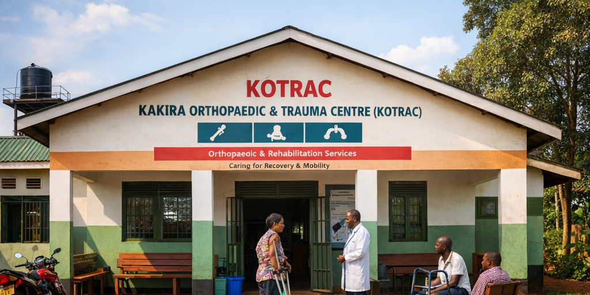
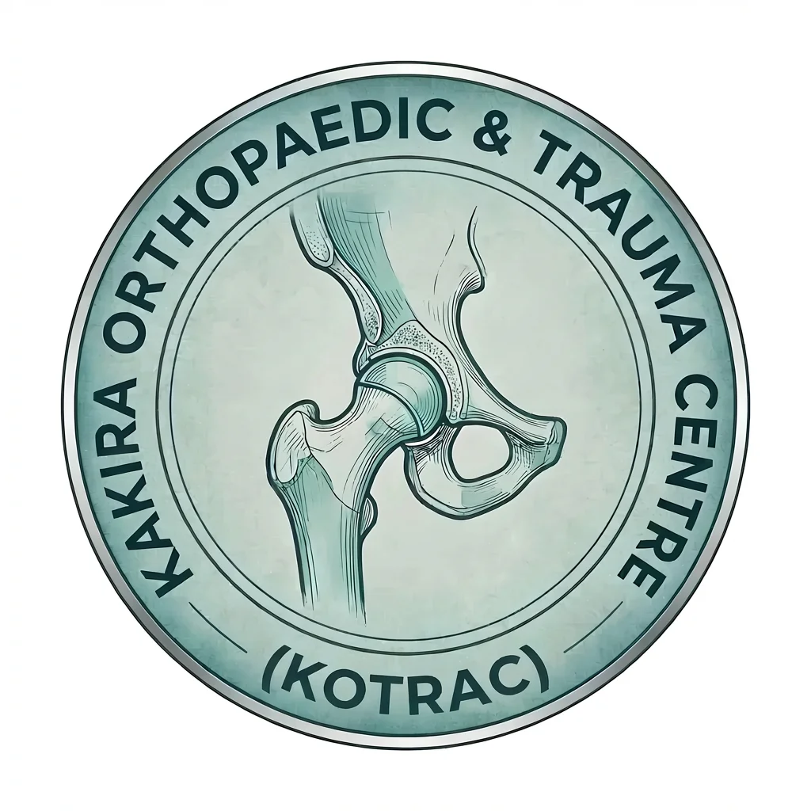

Gallery




Expanding access to trauma and physiotherapy care digitally in rural Uganda
KOTRAC Digital Orthopaedic Rehabilitation Network is a tele-rehabilitation platform extending orthopaedic and physiotherapy services from Kakira Orthopaedic and Trauma Centre to rural communities in Uganda.The platform connects patients with specialists through digital consultations, guided rehabilitation programs, and community rehabilitation assistants to improve recovery outcomes for trauma and disability patients.
Join Our NetworkMillions of people in rural Uganda lack access to orthopaedic and rehabilitation services. Patients recovering from fractures, spinal injuries, or childhood disabilities must travel long distances to urban hospitals. Many abandon physiotherapy due to cost and distance, resulting in permanent disability, reduced productivity, and poor quality of life.
Remote physiotherapy sessions connecting rural patients with specialists.
Digital rehabilitation programs for fractures, spinal injuries, and disabilities.
Locally trained assistants support patients with exercises and monitor progress.
Patients upload progress videos and receive guidance from orthopaedic professionals.

Email: kakiraorthopaedictraumacentre@gmail.com
Location: Kakira, Jinja District, Uganda
Send Email